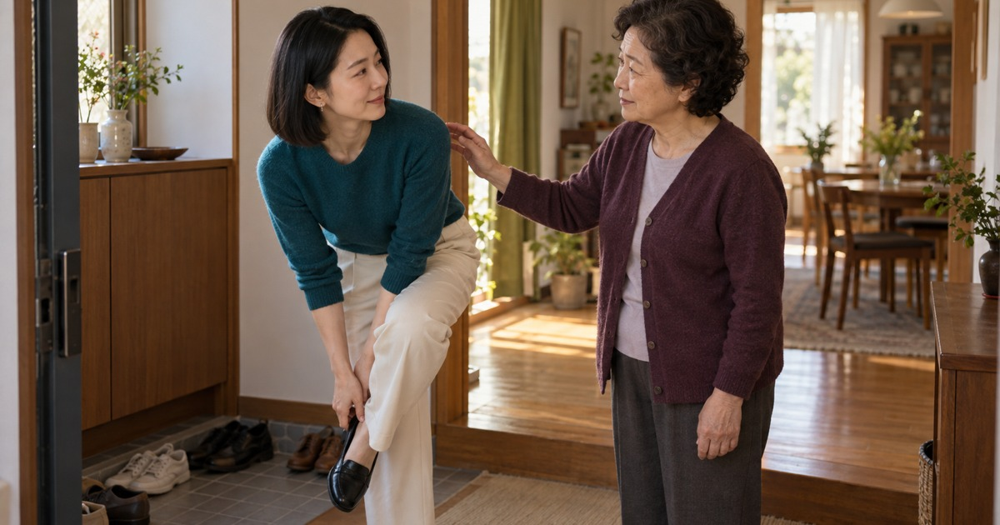

PHOTO CINEMA · WEBTOON · MUSIC
좋다가도
보고 싶어 와 놓고 집에 가고 싶다가도,
말없이 건넨 송편 하나에 잠깐 마음을 접는 추석.
노래·이야기 미리내맨 · 추석 노래 · 2분 32초

좋다가도 짜증 나
보고 싶어 찾아간 가족의 집에서 반가움과 피로가 함께 밀려온다.
결혼은 언제 하냐는 질문 앞에서 웃다가 속이 뒤집힌다.
말없이 건넨 송편 하나
말로 풀지 못한 마음에 어머니가 송편 하나를 건넨다.
짜증이 모두 사라지지는 않아도 하려던 말을 잠깐 접는다.
같은 노래를 두 가지 시간으로
실사 이미지 시네마는 표정과 사물 사이를 음악의 시간으로 이어 간다.
실사 웹툰은 칸과 칸의 여백을 두고 읽을 수 있으며 같은 원곡을 담은 웹툰 시네마로도 감상할 수 있다.
원화 · AI 생성 실사 이미지와 웹툰
가족 사이의 다른 웃음
내가 고친 거네가 부부의 수리 소동을 웃음으로 풀어낸다면 좋다가도는 명절의 반가움과 잔소리 사이에 남는 가족의 애정을 바라본다.
이미지 시네마 창작노트에서 장면과 음악 사이의 여백을 더 읽을 수 있습니다